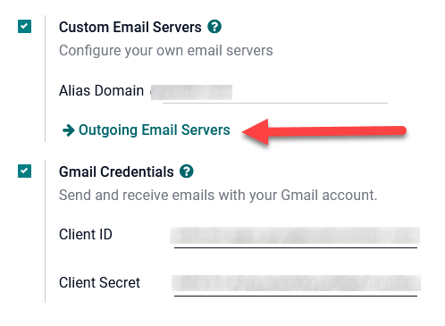
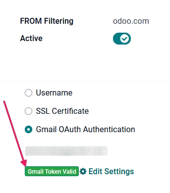
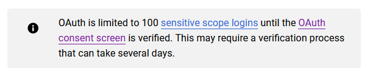
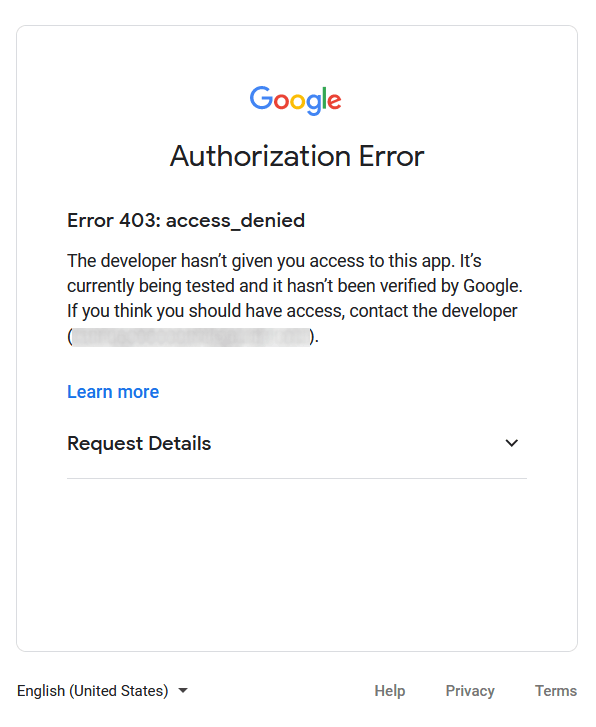
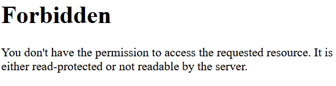
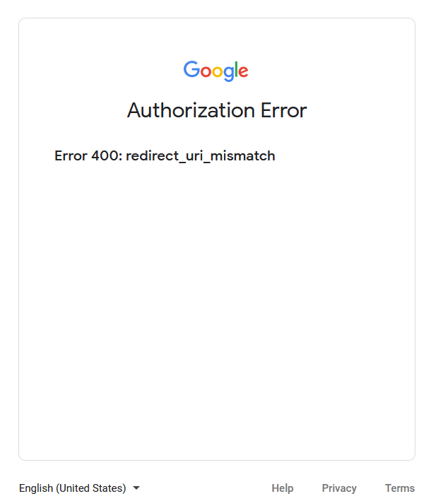

Conectar Gmail con Odoo mediante Google OAuth¶
Odoo es compatible con la OAuth de Google para Gmail. Para enviar correos electrónicos seguros desde un dominio personalizado, solo necesita configurar algunos ajustes en la plataforma Espacio de trabajo de Google, así como en el backend de la base de datos de Odoo. Esta configuración funciona al usar una dirección de correo electrónico personal o una creada por un dominio personalizado.
Truco
Para obtener más información, consulte la documentación de Google sobre la configuración de OAuth.
Configuración en Google¶
Crear un nuevo proyecto¶
Primero, vaya a la Consola de API de Google. Inicie sesión en su cuenta de Google Workspace si tiene una o inicie sesión en su cuenta personal de Gmail (debe coincidir con la dirección de correo electrónico que desea configurar en Odoo).
Luego, haga clic en Crear proyecto en la parte derecha de la pantalla de consentimiento de OAuth. Si un proyecto ya se creó en esta cuenta, entonces la opción Nuevo proyecto estará ubicada en la parte superior derecha, en el menú desplegable Seleccionar un proyecto.
En la pantalla de , cambie el nombre de proyecto a Odoo y busque la ubicación. Establezca la ubicación como la organización de Google Workspace. Si utiliza una cuenta personal de Gmail, establezca la ubicación como Sin organización.
Haga clic en Crear para finalizar este paso.
OAuth pantalla de consentimiento¶
Si la página no redirige a las opciones de , haga clic en pantalla de consentimiento de OAuth en el menú izquierdo.
En las opciones de tipo de usuario, seleccione el tipo de usuario correspondiente y vuelva a hacer clic en Crear, esto le llevará a la página para editar el registro a la aplicación.
Advertencia
A las cuentas personales de Gmail solo se les permite ser el tipo de usuario externo. Esto significa que es posible que Google requiera una aprobación o que agregue alcances. Sin embargo, si usa una cuenta de Google WorkSpace podrá usar el tipo de usuario interno.
También tome en cuenta que siempre y cuando la conexión API se encuentre en el modo de prueba externo no necesitará que Google aprueba nada. El límite de usuarios en modo de prueba es 100.
Editar el registro a la aplicación¶
A continuación, configuraremos el registro a la aplicación del proyecto.
En el paso de la pantalla de consentimiento de OAuth, en la sección de información de la aplicación, escriba Odoo en el campo nombre de aplicación. Seleccione la dirección de correo electrónico de la organización en el campo de correo electrónico de soporte de usuario.
A continuación, en , haga clic en agregar dominio e introduzca odoo.com.
Después de eso, en la sección información de contacto de desarrollador, introduzca la dirección de correo electrónico de la organización. Google utiliza esta dirección de correo electrónico para notificar a la organización de cualquier cambio en su proyecto.
Haga clic en guardar y continuar. Omita la página , vaya hasta la parte inferior de la página y haga clic en guardar y continuar.
Si sigue en el modo de prueba (externo), y desea agregar las direcciones de correo que configuró en el paso Usuarios de prueba haga clic en Agregar usuarios y después en Guardar y continuar. Verá un resumen del registro de la aplicación.
Por último, vaya al final de la página y haga clic en volver al tablero para terminar de configurar el proyecto.
Crear credenciales¶
Ahora que el proyecto está configurado, debe crear credenciales, entre ellas el ID del cliente y el secreto del cliente. Primero, haga clic en Credenciales en el menú de la barra lateral izquierda.
Posteriormente, haga clic en crear credenciales en el menú superior y seleccione ID de cliente de OAuth en el menú desplegable.
En tipo de aplicación, seleccione aplicación web en el menú desplegable.
Escriba
Odooen el campo Nombre.En la etiqueta URI de redirección autorizados, haga clic en el botón AGREGAR URI y luego escriba
https://nombre.odoo.com/google_gmail/confirmen el campo URI 1. Asegúrese de reemplazar la parte de nombre de la URL con el nombre real de su base de datos.A continuación, haga clic en Crear para generar un ID de cliente de OAuth y un secreto de cliente. Por último, copie cada valor generado para usar más tarde en la configuración de Odoo y luego vaya a la base de datos de Odoo.
Configuración en Odoo¶
Introducir credenciales de Google¶
Primero, abra Odoo y vaya al módulo Aplicaciones. Luego, elimine el filtro Aplicaciones de la barra de búsqueda y escriba Google. Instale el módulo que se llama Google Gmail.
Después, vaya a y asegúrese de que la casilla de servidores de correo electrónico personalizados o :guilabel:servidores de correo electrónico externos` en la sección Conversaciones esté seleccionada. Aparecerá una nueva opción para las credenciales de Gmail o para usar un servidor de Gmail. Luego, copie y pegue el ID de cliente y el secreto de cliente en sus respectivos campos y guarde los ajustes.
Configurar servidor de correos electrónicos salientes¶
Para configurar la cuenta externa de Gmail, regrese a la parte superior de los ajustes para los :guilabel:` servidores de correo electrónico personalizados` y haga clic en el enlace Servidores de correo saliente .
Luego, haga clic en nuevo para crear un servidor de correo electrónico y complete el nombre, la descripción y el correo en el nombre de usuario (si es necesario).
Haga clic en autenticación de Gmail con OAuth o en Gmail (en la sección autenticar con o conexión). Por último, haga clic en Conectar su cuenta de Gmail.
Se abrirá una nueva ventana con el nombre Google para completar el proceso de autorización. Seleccione la dirección de correo electrónico adecuada que se configurará en Odoo.
Si la dirección de correo electrónico es una cuenta personal, aparecerá un paso adicional. Haga clic en continuar para permitir la verificación y conectar la cuenta de Gmail con Odoo.
Después, brinde a Odoo acceso a la cuenta de Google al hacer clic en continuar o permitir. Después de eso, la página lo redirecciona al servidor de correo electrónico recién configurado en Odoo. La configuración carga de forma automática el token en Odoo y aparecerá una etiqueta de color verde que dice Token de Gmail válido.
Por último, pruebe la conexión. Debe aparecer un mensaje de confirmación. La base de datos de Odoo ahora puede enviar correos electrónicos seguros a través de Google mediante la autenticación OAuth.
Preguntas frecuentes sobre la autenticación OAuth de Google¶
Estados de publicación de producción y de prueba¶
Si elige producción como estado de publicación (en lugar de prueba) aparecerá el siguiente mensaje de advertencia:
Para corregir esta advertencia, vaya a la plataforma de API de Google. Si el estado de publicación es en producción, haga clic en volver a prueba para corregir el problema.
No se agregaron usuarios de prueba¶
Si no se agregaron usuarios de prueba a la pantalla de consentimiento de OAuth, entonces recibirá un error 403 de acceso denegado.
Para corregir este error, regrese a la pantalla de consentimiento de OAuth en API y servicios y agregue usuarios de prueba a la aplicación. Agregue el correo electrónico que está configurando en Odoo.
El módulo de Gmail no se actualizó¶
Si el módulo Google Gmail de Odoo no se ha actualizado a la versión más reciente, entonces recibirá mensaje de error de tipo prohibido.
Para corregir este error, vaya al módulo y elimine los términos de búsqueda. Después, busque Gmail o Google y actualice el módulo Google Gmail. Por último, haga clic en los tres puntos en la parte superior derecha del módulo y seleccione actualizar.
Tipo de aplicación¶
Aparecerá un error de autorización al crear las credenciales (ID de cliente y secreto de cliente de OAuth) si seleccionó aplicación de escritorio como el tipo de aplicación.
Para corregir este error, elimine las credenciales existentes y cree nuevas, seleccione aplicación web como tipo de aplicación. A continuación, en URI de redirección autorizados, haga clic en AGREGAR URI y escriba https://nombre.odoo.com/google_gmail/confirm en el nombre. Asegúrese de reemplazar la parte de nombre de la URL con el nombre real de su base de datos.